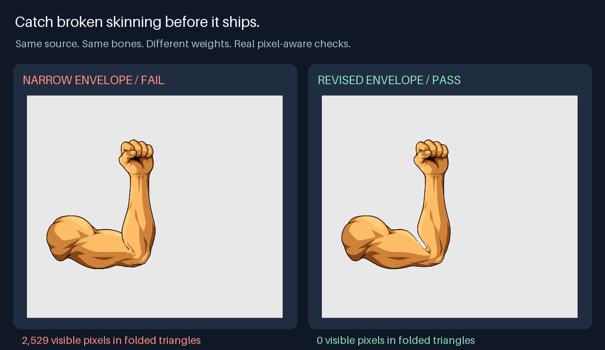

OPEN GAME SKILLS ↗Game-making skills
with evidence you can run.
Give your agent a production workflow and an executable check. Start with a real weighted-mesh failure: normalized weights and fixed bones, with an elbow that still folds visible artwork.

Named bindings, pixel-aware folds, head/body identity locks and sequence audits. The case includes a rejected result, a corrected result and a command to reproduce both. Full-character and gameplay acceptance remain independently scoped.